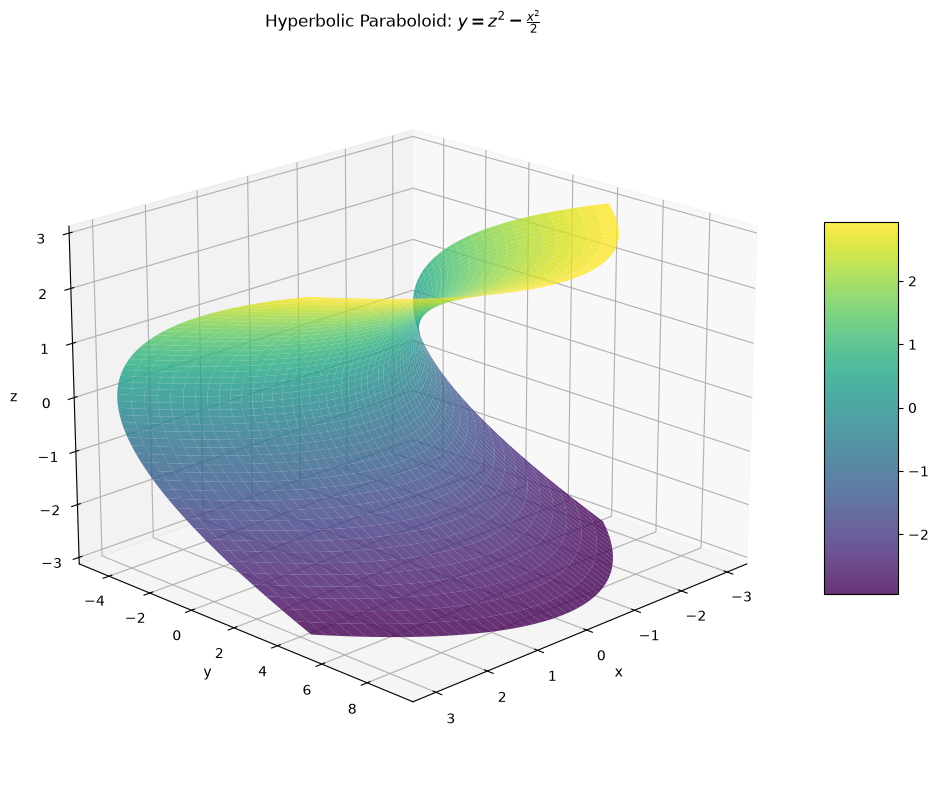
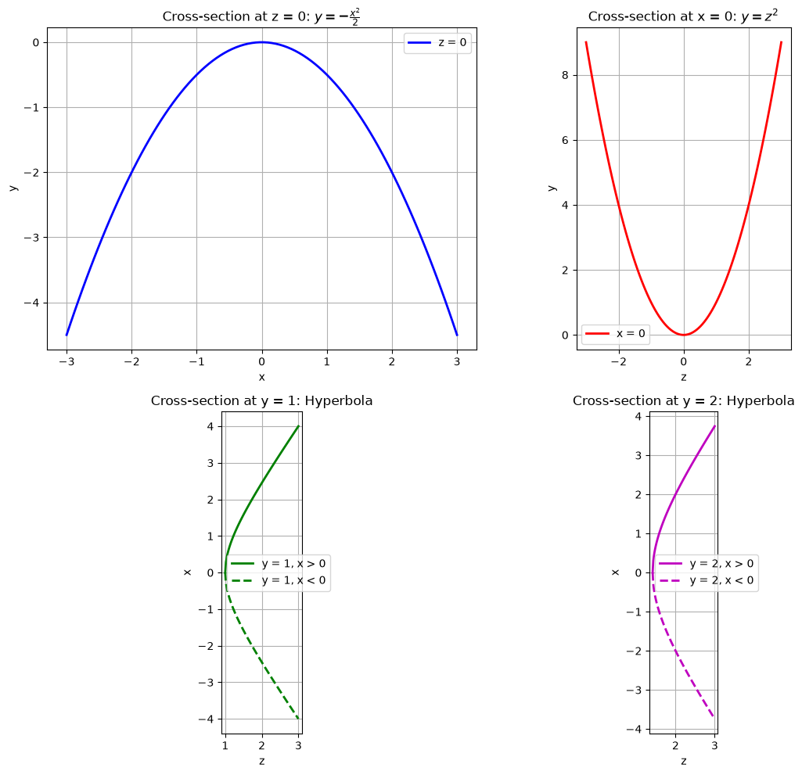
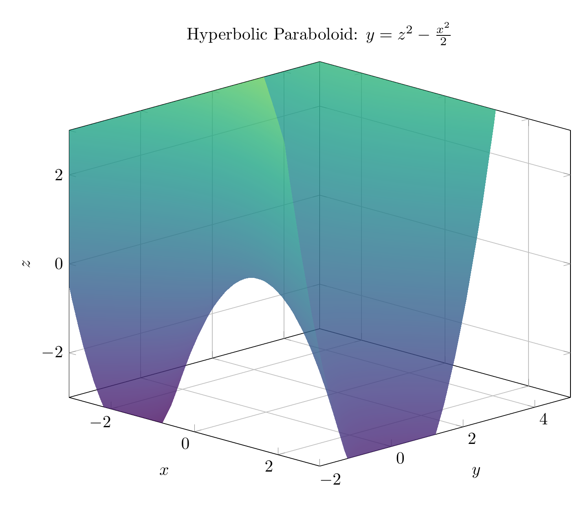
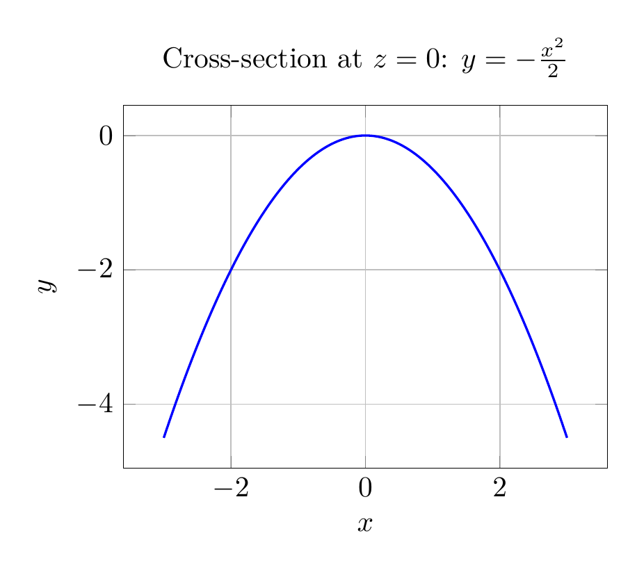

Path: mcma-Qwen3.5-397B-A17B/calculus-12.6.31/chat_20260825_023251_515715_utc_0800
Problem
Please solve the math problem in the image.

End of problem
Answer
# Solution: Reducing and Classifying the Quadric Surface
## Problem
Reduce the equation to one of the standard forms, classify the surface, and sketch it:
$$x^2 + 2y - 2z^2 = 0$$
## Step 1: Reduce to Standard Form
Starting with the given equation:
$$x^2 + 2y - 2z^2 = 0$$
Solve for $y$:
$$2y = 2z^2 - x^2$$
$$y = z^2 - \frac{x^2}{2}$$
This is the **standard form** of the equation.
## Step 2: Classify the Surface
The equation $y = z^2 - \frac{x^2}{2}$ matches the standard form of a **hyperbolic paraboloid**:
$$\frac{y}{c} = \frac{z^2}{b^2} - \frac{x^2}{a^2}$$
where:
- $c = 1$
- $b = 1$
- $a = \sqrt{2}$
**Classification: Hyperbolic Paraboloid**
A hyperbolic paraboloid is a saddle-shaped surface that opens upward along one axis and downward along another. It's sometimes called a "saddle surface."
## Step 3: Analyze Cross-Sections
To understand the surface better, let's examine its traces:
### Traces in coordinate planes:
1. **When $z = 0$** (trace in $xy$-plane):
$$y = -\frac{x^2}{2}$$
This is a **parabola** opening downward.
2. **When $x = 0$** (trace in $yz$-plane):
$$y = z^2$$
This is a **parabola** opening upward.
3. **When $y = k$** (horizontal traces):
$$k = z^2 - \frac{x^2}{2}$$
$$\frac{x^2}{2} - z^2 = -k$$
These are **hyperbolas** for $k \neq 0$.
## Key Characteristics
- **Axis**: The $y$-axis is the axis of the paraboloid
- **Vertex**: At the origin $(0, 0, 0)$
- **Shape**: Saddle-shaped (opens up in $z$-direction, down in $x$-direction)
- **Symmetry**: Symmetric with respect to the $yz$-plane and $xy$-plane
## Final Answer
$\boxed{\text{Standard form: } y = z^2 - \frac{x^2}{2}, \quad \text{Surface: Hyperbolic Paraboloid}}$
The plots above show:
1. The 3D surface visualization
2. Cross-sectional traces demonstrating the parabolic and hyperbolic nature of the surface
---


\documentclass[border=10pt]{standalone}
\usepackage{pgfplots}
\usepgfplotslibrary{colormaps}
\pgfplotsset{compat=1.18}
\begin{document}
\begin{tikzpicture}
\begin{axis}[
xlabel=$x$,
ylabel=$y$,
zlabel=$z$,
title={Hyperbolic Paraboloid: $y = z^2 - \frac{x^2}{2}$},
view={45}{20},
colormap/viridis,
width=12cm,
height=10cm,
grid=major,
zmin=-3, zmax=3,
xmin=-3, xmax=3,
ymin=-2, ymax=5,
]
\addplot3[
surf,
shader=interp,
domain=-3:3,
y domain=-3:3,
samples=40,
opacity=0.8
] {y^2 - x^2/2};
\end{axis}
\end{tikzpicture}
\end{document}

\documentclass[border=10pt]{standalone}
\usepackage{pgfplots}
\pgfplotsset{compat=1.18}
\begin{document}
\begin{tikzpicture}
\begin{axis}[
xlabel={$x$},
ylabel={$y$},
title={Cross-section at $z = 0$: $y = -\frac{x^2}{2}$},
domain=-3:3,
samples=100,
width=8cm,
height=6cm,
grid=major,
axis equal image,
]
\addplot[blue, thick, smooth] {-x^2/2};
\end{axis}
\end{tikzpicture}
\end{document}

End of answer